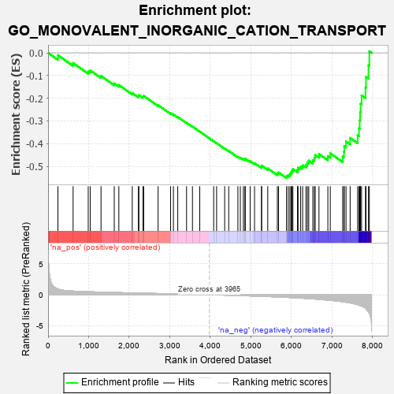
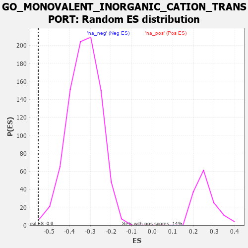

| | | Dataset | 7d |
| Phenotype | NoPhenotypeAvailable |
| Upregulated in class | na_neg |
| GeneSet | GO_MONOVALENT_INORGANIC_CATION_TRANSPORT |
| Enrichment Score (ES) | -0.55150855 |
| Normalized Enrichment Score (NES) | -1.6732744 |
| Nominal p-value | 0.0023201855 |
| FDR q-value | 0.051679756 |
| FWER p-Value | 0.986 |
Table: GSEA Results Summary

Fig 1: Enrichment plot: GO_MONOVALENT_INORGANIC_CATION_TRANSPORT
Profile of the Running ES Score & Positions of GeneSet Members on the Rank Ordered List
| PROBE | GENE SYMBOL | GENE_TITLE | RANK IN GENE LIST | RANK METRIC SCORE | RUNNING ES | CORE ENRICHMENT | | 1 | NSF | | | 243 | 0.947 | -0.0104 | No |
| 2 | KCND2 | | | 617 | 0.590 | -0.0449 | No |
| 3 | COX10 | | | 990 | 0.485 | -0.0816 | No |
| 4 | AKT1 | | | 1040 | 0.476 | -0.0776 | No |
| 5 | KCNH7 | | | 1305 | 0.427 | -0.1018 | No |
| 6 | ABCB8 | | | 1631 | 0.369 | -0.1350 | No |
| 7 | SLMAP | | | 1744 | 0.346 | -0.1417 | No |
| 8 | KCNC2 | | | 2075 | 0.295 | -0.1771 | No |
| 9 | CDK2 | | | 2226 | 0.272 | -0.1903 | No |
| 10 | COX15 | | | 2238 | 0.270 | -0.1859 | No |
| 11 | ANO6 | | | 2339 | 0.255 | -0.1931 | No |
| 12 | COX7C | | | 2356 | 0.252 | -0.1897 | No |
| 13 | PHB2 | | | 2712 | 0.197 | -0.2303 | No |
| 14 | COX17 | | | 3019 | 0.147 | -0.2659 | No |
| 15 | CHP1 | | | 3089 | 0.138 | -0.2717 | No |
| 16 | KCNN1 | | | 3196 | 0.123 | -0.2825 | No |
| 17 | KCNK1 | | | 3413 | 0.088 | -0.3079 | No |
| 18 | SURF1 | | | 3558 | 0.066 | -0.3247 | No |
| 19 | COX5A | | | 3738 | 0.036 | -0.3466 | No |
| 20 | KCNT2 | | | 4081 | -0.021 | -0.3894 | No |
| 21 | WNK3 | | | 4153 | -0.034 | -0.3977 | No |
| 22 | ADRB2 | | | 4352 | -0.068 | -0.4213 | No |
| 23 | KCNQ4 | | | 4452 | -0.085 | -0.4320 | No |
| 24 | CLCN3 | | | 4678 | -0.134 | -0.4576 | No |
| 25 | CNNM4 | | | 4738 | -0.147 | -0.4619 | No |
| 26 | P2RX4 | | | 4813 | -0.161 | -0.4678 | No |
| 27 | SGK1 | | | 4852 | -0.168 | -0.4690 | No |
| 28 | DLG1 | | | 4860 | -0.169 | -0.4662 | No |
| 29 | COX5B | | | 4980 | -0.194 | -0.4771 | No |
| 30 | DRD2 | | | 5088 | -0.221 | -0.4859 | No |
| 31 | SCN1A | | | 5260 | -0.261 | -0.5019 | No |
| 32 | PTEN | | | 5262 | -0.261 | -0.4965 | No |
| 33 | KCNC4 | | | 5414 | -0.298 | -0.5092 | No |
| 34 | WNK1 | | | 5650 | -0.362 | -0.5311 | No |
| 35 | CD63 | | | 5680 | -0.370 | -0.5268 | No |
| 36 | ASIC4 | | | 5876 | -0.427 | -0.5423 | Yes |
| 37 | KCNQ1 | | | 5918 | -0.441 | -0.5381 | Yes |
| 38 | ACTN2 | | | 5960 | -0.458 | -0.5334 | Yes |
| 39 | KCNH6 | | | 5988 | -0.467 | -0.5268 | Yes |
| 40 | NETO2 | | | 6009 | -0.475 | -0.5191 | Yes |
| 41 | HVCN1 | | | 6034 | -0.482 | -0.5118 | Yes |
| 42 | SCN9A | | | 6146 | -0.518 | -0.5147 | Yes |
| 43 | KCNQ5 | | | 6161 | -0.524 | -0.5052 | Yes |
| 44 | KCNH8 | | | 6225 | -0.545 | -0.5015 | Yes |
| 45 | STK39 | | | 6274 | -0.563 | -0.4955 | Yes |
| 46 | GALR2 | | | 6355 | -0.599 | -0.4928 | Yes |
| 47 | TRPM4 | | | 6390 | -0.612 | -0.4839 | Yes |
| 48 | MFSD3 | | | 6424 | -0.630 | -0.4746 | Yes |
| 49 | VAMP2 | | | 6525 | -0.672 | -0.4728 | Yes |
| 50 | OTOP1 | | | 6562 | -0.690 | -0.4625 | Yes |
| 51 | ARF1 | | | 6583 | -0.701 | -0.4500 | Yes |
| 52 | DPP6 | | | 6676 | -0.751 | -0.4455 | Yes |
| 53 | HCN1 | | | 6895 | -0.865 | -0.4545 | Yes |
| 54 | SCN4A | | | 6955 | -0.910 | -0.4424 | Yes |
| 55 | HCN4 | | | 7260 | -1.134 | -0.4565 | Yes |
| 56 | ASIC5 | | | 7293 | -1.160 | -0.4357 | Yes |
| 57 | ANK2 | | | 7298 | -1.170 | -0.4110 | Yes |
| 58 | GPD1L | | | 7343 | -1.215 | -0.3905 | Yes |
| 59 | KCNB1 | | | 7444 | -1.327 | -0.3747 | Yes |
| 60 | KCNN2 | | | 7629 | -1.611 | -0.3633 | Yes |
| 61 | HCN2 | | | 7662 | -1.668 | -0.3316 | Yes |
| 62 | TRPM2 | | | 7680 | -1.712 | -0.2969 | Yes |
| 63 | ANK3 | | | 7690 | -1.740 | -0.2607 | Yes |
| 64 | RHAG | | | 7701 | -1.769 | -0.2240 | Yes |
| 65 | ASIC1 | | | 7726 | -1.838 | -0.1875 | Yes |
| 66 | PKD2 | | | 7822 | -2.167 | -0.1530 | Yes |
| 67 | KCNC1 | | | 7835 | -2.249 | -0.1062 | Yes |
| 68 | CAV3 | | | 7896 | -2.739 | -0.0550 | Yes |
| 69 | ASIC2 | | | 7917 | -2.995 | 0.0068 | Yes |
Table: GSEA details [plain text format]

Fig 2: GO_MONOVALENT_INORGANIC_CATION_TRANSPORT: Random ES distribution
Gene set null distribution of ES for GO_MONOVALENT_INORGANIC_CATION_TRANSPORT